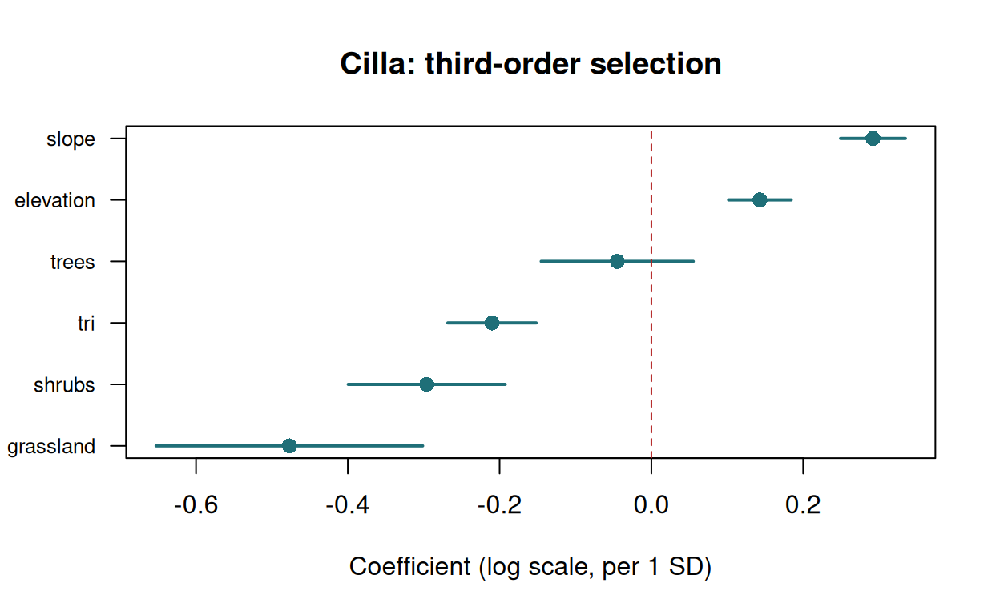
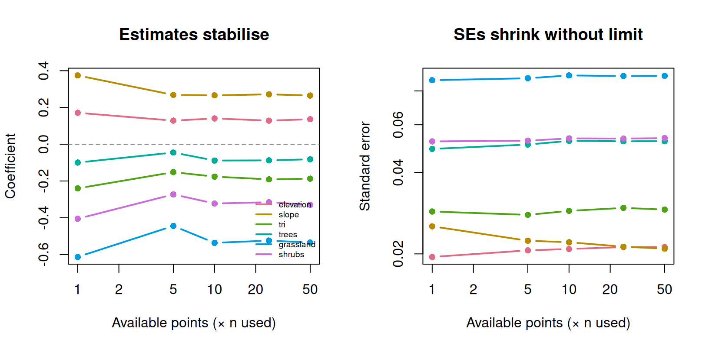
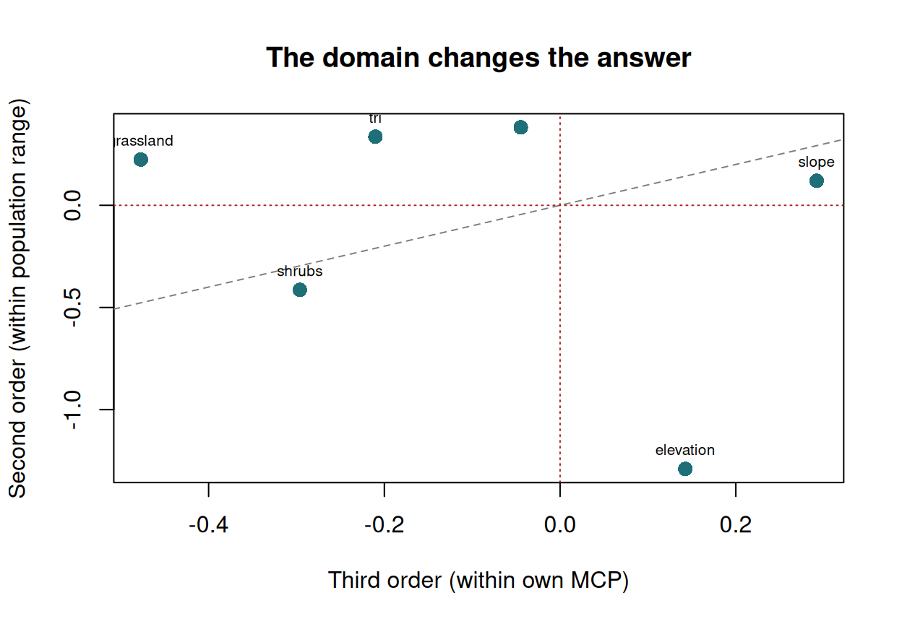
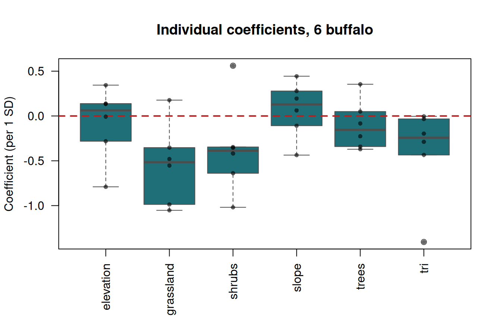
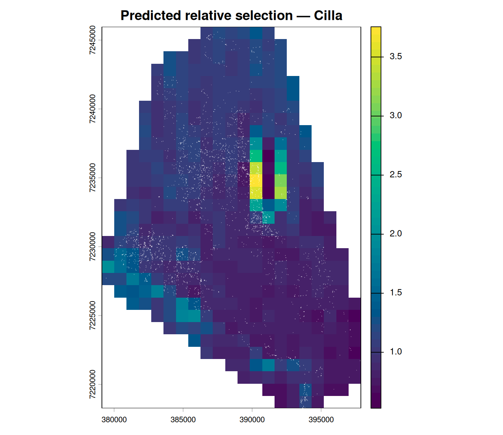

Exercise 7 — Fitting a resource selection function
Class 7 · Theme 5
Goals. Build used and available samples; fit an RSF and read the coefficients as odds ratios; check that estimates stabilise as availability grows; change the availability domain and watch the answer move; fit all six buffalo two-stage; and map the predicted selection surface.
Time: ~55 minutes. Packages: amt, terra, sf, dplyr, tidyr.
Setup
clean <- read.csv("data/buffalo_kruger.csv.gz") |>
transmute(id = individual.local.identifier,
t = as.POSIXct(timestamp, tz = "UTC"),
x = location.long, y = location.lat) |>
filter(!is.na(x), !is.na(y)) |>
distinct(id, t, .keep_all = TRUE)
trk <- make_track(clean, x, y, t, id = id, crs = 4326) |>
transform_coords(crs_to = 32736)
# Covariates, projected to match the track
elev <- rast("data/kruger_elevation.tif")
terr <- terrain(elev, v = c("slope", "TRI"), unit = "degrees")
names(terr) <- c("slope", "tri")
lc <- rast("data/kruger_landcover.tif")
covs <- project(c(elev, terr, lc), "EPSG:32736")
names(covs)
#> [1] "elevation" "slope" "tri" "trees" "grassland" "shrubs"
#> [7] "cropland"The track is in UTM 36S. amt’s extract_covariates() will not reproject for you — hand it a raster in EPSG:4326 and every covariate comes back NA, and glm() then fails with no (non-missing) observations. Project once, here, and the rest of the exercise just works.
Task 1 — Used and available
set.seed(2026)
cilla <- trk |> filter(id == "Cilla")
rsf_dat <- cilla |>
random_points(n = nrow(cilla) * 10) |>
extract_covariates(covs)
table(rsf_dat$case_)
#>
#> FALSE TRUE
#> 35280 3528
mean(is.na(rsf_dat$elevation))
#> [1] 0random_points() applied to a track draws available points inside that animal’s MCP — so this is a third-order analysis: where does Cilla go within the range she has already chosen?
Your turn
1a. Standardise the covariates and add the infinite weights. 1b. Why weight the available points so heavily?
The used–available design is really an inhomogeneous Poisson point process, and logistic regression is a computational device for fitting it. The equivalence is exact only in the limit of infinitely many, infinitely down-weighted available points. Giving the available points a large weight (here 5,000) makes the logistic coefficients converge to the correct point-process coefficients.
Standardising makes the coefficients comparable across covariates measured in different units — “per one standard deviation” — and improves the numerical conditioning of the fit.
Task 2 — Fit and interpret
fit <- glm(case_ ~ elevation + slope + tri + trees + grassland + shrubs,
data = d, family = binomial(), weights = w)
round(summary(fit)$coefficients, 4)
#> Estimate Std. Error z value Pr(>|z|)
#> (Intercept) -10.8483 0.0173 -628.3246 0.0000
#> elevation 0.1425 0.0210 6.7763 0.0000
#> slope 0.2920 0.0218 13.4035 0.0000
#> tri -0.2102 0.0297 -7.0803 0.0000
#> trees -0.0447 0.0511 -0.8751 0.3815
#> grassland -0.4771 0.0896 -5.3264 0.0000
#> shrubs -0.2962 0.0528 -5.6118 0.0000Your turn
2a. Express each coefficient as an odds ratio with a confidence interval. 2b. Which covariate has the strongest effect, and in which direction?
res <- data.frame(
term = names(coef(fit)),
beta = coef(fit),
se = summary(fit)$coefficients[, 2]
) |>
filter(term != "(Intercept)") |>
mutate(
RSS = round(exp(beta), 2), # relative selection strength
lower = round(exp(beta - 1.96 * se), 2),
upper = round(exp(beta + 1.96 * se), 2),
beta = round(beta, 3)
) |>
arrange(desc(abs(beta)))
res
#> term beta se RSS lower upper
#> grassland grassland -0.477 0.08958078 0.62 0.52 0.74
#> shrubs shrubs -0.296 0.05277846 0.74 0.67 0.82
#> slope slope 0.292 0.02178613 1.34 1.28 1.40
#> tri tri -0.210 0.02968249 0.81 0.76 0.86
#> elevation elevation 0.143 0.02103398 1.15 1.11 1.20
#> trees trees -0.045 0.05109606 0.96 0.87 1.06r <- res[order(res$beta), ]
plot(r$beta, seq_len(nrow(r)), pch = 16, col = "#1f6f78", cex = 1.3,
xlim = range(c(r$beta - 1.96 * r$se, r$beta + 1.96 * r$se)),
yaxt = "n", ylab = "", xlab = "Coefficient (log scale, per 1 SD)",
main = "Cilla: third-order selection")
segments(r$beta - 1.96 * r$se, seq_len(nrow(r)),
r$beta + 1.96 * r$se, seq_len(nrow(r)), col = "#1f6f78", lwd = 2)
axis(2, at = seq_len(nrow(r)), labels = r$term, las = 1, cex.axis = 0.8)
abline(v = 0, col = "firebrick", lty = 2)
Read the table as relative selection strength: RSS = exp(beta) is the factor by which the relative probability of use multiplies for a one-standard- deviation increase in that covariate, holding the others fixed.
An RSS of 1 means no selection; the confidence interval tells you whether you can distinguish it from 1.
Note the intercept is not interpretable. It absorbs the arbitrary ratio of available to used points — change n and the intercept moves, while the slopes do not. That is precisely why only relative statements are licensed.
Task 3 — Does availability sample size matter?
The number of available points is your choice. The estimates should stop moving once you have drawn enough.
multipliers <- c(1, 5, 10, 25, 50)
stab <- lapply(multipliers, function(m) {
dd <- cilla |>
random_points(n = nrow(cilla) * m) |>
extract_covariates(covs) |>
filter(if_all(all_of(covars), \(z) !is.na(z))) |>
mutate(across(all_of(covars), \(z) as.numeric(scale(z))),
w = ifelse(case_, 1, 5000))
f <- glm(case_ ~ elevation + slope + tri + trees + grassland + shrubs,
data = dd, family = binomial(), weights = w)
data.frame(mult = m,
term = names(coef(f))[-1],
beta = as.numeric(coef(f))[-1],
se = summary(f)$coefficients[-1, 2])
}) |> bind_rows()
stab |>
select(mult, term, beta) |>
pivot_wider(names_from = mult, values_from = beta) |>
mutate(across(-term, \(z) round(z, 3)))
#> # A tibble: 6 × 6
#> term `1` `5` `10` `25` `50`
#> <chr> <dbl> <dbl> <dbl> <dbl> <dbl>
#> 1 elevation 0.171 0.128 0.14 0.128 0.136
#> 2 slope 0.374 0.268 0.266 0.272 0.265
#> 3 tri -0.24 -0.152 -0.176 -0.191 -0.187
#> 4 trees -0.1 -0.045 -0.089 -0.088 -0.082
#> 5 grassland -0.613 -0.444 -0.536 -0.524 -0.535
#> 6 shrubs -0.405 -0.273 -0.322 -0.316 -0.33Your turn
3a. Have the coefficients stabilised? 3b. What happens to the standard errors?
par(mfrow = c(1, 2))
terms <- unique(stab$term)
cols <- hcl.colors(length(terms), "Dark 3")
plot(range(multipliers), range(stab$beta), type = "n", log = "x",
xlab = "Available points (× n used)", ylab = "Coefficient",
main = "Estimates stabilise")
for (i in seq_along(terms)) {
z <- stab[stab$term == terms[i], ]
lines(z$mult, z$beta, col = cols[i], lwd = 2, type = "b", pch = 16)
}
abline(h = 0, lty = 2, col = "grey50")
legend("bottomright", terms, col = cols, lwd = 2, bty = "n", cex = 0.6)
plot(range(multipliers), range(stab$se), type = "n", log = "xy",
xlab = "Available points (× n used)", ylab = "Standard error",
main = "SEs shrink without limit")
for (i in seq_along(terms)) {
z <- stab[stab$term == terms[i], ]
lines(z$mult, z$se, col = cols[i], lwd = 2, type = "b", pch = 16)
}
The coefficients settle down: past roughly 10× the used sample they barely move, which is the check you should always run and report.
The standard errors keep shrinking as you add available points — and this is the crucial asymmetry. Availability points carry information about the landscape, not about the animal. Drawing more of them makes your estimate of what was available more precise, so the SEs fall, but you have not observed the animal any more closely.
That is why p-values in used–available designs are close to meaningless: you choose the sample size, so you choose the p-value. Report effect sizes, confidence intervals, consistency across individuals, and validation.
Task 4 — Change the availability domain
Same animal, same covariates, different definition of “available”.
# Third order: within Cilla's own MCP (what we did above)
third <- d
# Second order: within the MCP of ALL six animals — the population's range
pop_mcp <- hr_mcp(trk, levels = 0.99)
second <- random_points(pop_mcp, n = nrow(cilla) * 10, presence = cilla) |>
extract_covariates(covs) |>
filter(if_all(all_of(covars), \(z) !is.na(z))) |>
mutate(across(all_of(covars), \(z) as.numeric(scale(z))),
w = ifelse(case_, 1, 5000))
# How different are the two domains?
c(cilla_mcp_km2 = round(hr_area(hr_mcp(cilla, levels = 0.99))$area / 1e6),
population_mcp_km2 = round(hr_area(pop_mcp)$area / 1e6))
#> cilla_mcp_km2 population_mcp_km2
#> 309 2939
f3 <- glm(case_ ~ elevation + slope + tri + trees + grassland + shrubs,
data = third, family = binomial(), weights = w)
f2 <- glm(case_ ~ elevation + slope + tri + trees + grassland + shrubs,
data = second, family = binomial(), weights = w)
data.frame(
term = names(coef(f3))[-1],
third_order = round(coef(f3)[-1], 3),
second_order = round(coef(f2)[-1], 3)
)
#> term third_order second_order
#> elevation elevation 0.143 -1.290
#> slope slope 0.292 0.120
#> tri tri -0.210 0.336
#> trees trees -0.045 0.381
#> grassland grassland -0.477 0.224
#> shrubs shrubs -0.296 -0.414Your turn
4a. Do any coefficients change sign or magnitude substantially? 4b. Which analysis is “right”?
cmp <- data.frame(term = names(coef(f3))[-1],
third = coef(f3)[-1], second = coef(f2)[-1])
plot(cmp$third, cmp$second, pch = 16, col = "#1f6f78", cex = 1.4,
xlab = "Third order (within own MCP)",
ylab = "Second order (within population range)",
main = "The domain changes the answer")
abline(0, 1, col = "grey50", lty = 2)
abline(h = 0, v = 0, col = "firebrick", lty = 3)
text(cmp$third, cmp$second, cmp$term, pos = 3, cex = 0.65)
Points off the dashed 1:1 line are covariates whose apparent importance depends on the domain; points in the upper-left or lower-right quadrants have changed sign between the two analyses.
Neither is “right”. They answer different questions:
- Second order — given the whole area the population occupies, where does Cilla place her range?
- Third order — given the range she has already established, where within it does she go?
A covariate can drive the first decision and be irrelevant to the second, or act in opposite directions at the two scales — an animal may settle in a grass-rich part of the park and then, within it, seek out the scarce shade.
The obligation on you is to state the order and the availability domain explicitly, in the abstract, not buried in the methods. A habitat-selection result without that information cannot be interpreted.
In Class 5 we compared used points against points drawn from the convex hull of all six animals and found buffalo used grassland about 1.6× more than it was available — apparent selection.
Here, within Cilla’s own MCP, the grassland coefficient is negative.
Both are correct, and together they tell a coherent story: buffalo place their ranges in the grassy parts of the landscape (a second-order preference), and then, within a range that is already overwhelmingly grassland, they move towards the scarcer other things it contains.
The availability domain for Cilla is 309 km²; for the population it is 2,939 km² — nearly ten times larger, and a very different menu. Reporting the third-order coefficient as “buffalo avoid grassland” would be a serious misreading.
Task 5 — All six animals, two-stage
fit_one <- function(animal) {
a <- trk |> filter(id == animal)
dd <- a |>
random_points(n = nrow(a) * 10) |>
extract_covariates(covs) |>
filter(if_all(all_of(covars), \(z) !is.na(z))) |>
mutate(across(all_of(covars), \(z) as.numeric(scale(z))),
w = ifelse(case_, 1, 5000))
f <- glm(case_ ~ elevation + slope + tri + trees + grassland + shrubs,
data = dd, family = binomial(), weights = w)
data.frame(id = animal, term = names(coef(f))[-1], beta = as.numeric(coef(f))[-1])
}
ids <- unique(trk$id)
per_animal <- lapply(ids, fit_one) |> bind_rows()
per_animal |>
pivot_wider(names_from = id, values_from = beta) |>
mutate(across(-term, \(z) round(z, 2)))
#> # A tibble: 6 × 7
#> term Queen Gabs Cilla Mvubu Toni Pepper
#> <chr> <dbl> <dbl> <dbl> <dbl> <dbl> <dbl>
#> 1 elevation -0.79 0.14 0.13 0.34 -0.01 -0.28
#> 2 slope -0.11 0.2 0.28 0.44 -0.44 0.06
#> 3 tri 0 -0.29 -0.2 -0.44 -1.41 -0.03
#> 4 trees -0.23 -0.37 -0.08 -0.34 0.05 0.35
#> 5 grassland -0.35 -0.99 -0.55 -1.05 0.18 -0.48
#> 6 shrubs -0.64 -0.42 -0.35 -0.36 0.56 -1.02Your turn
5a. Summarise across individuals: mean coefficient, SE, and a t-test against zero. 5b. Are the animals consistent?
pop_level <- per_animal |>
group_by(term) |>
summarise(
mean_beta = mean(beta),
se = sd(beta) / sqrt(n()),
t = mean_beta / se,
p = 2 * pt(-abs(t), df = n() - 1),
n_positive = sum(beta > 0),
.groups = "drop"
) |>
mutate(across(c(mean_beta, se, t), \(z) round(z, 3)), p = round(p, 4)) |>
arrange(desc(abs(mean_beta)))
pop_level
#> # A tibble: 6 × 6
#> term mean_beta se t p n_positive
#> <chr> <dbl> <dbl> <dbl> <dbl> <int>
#> 1 grassland -0.541 0.184 -2.94 0.0322 1
#> 2 tri -0.394 0.213 -1.85 0.123 0
#> 3 shrubs -0.37 0.213 -1.73 0.143 1
#> 4 trees -0.103 0.112 -0.919 0.400 2
#> 5 elevation -0.077 0.166 -0.466 0.661 3
#> 6 slope 0.072 0.127 0.568 0.594 4boxplot(beta ~ term, data = per_animal, col = "#1f6f78", border = "grey30",
las = 2, xlab = "", ylab = "Coefficient (per 1 SD)",
main = "Individual coefficients, 6 buffalo")
abline(h = 0, col = "firebrick", lty = 2, lwd = 2)
stripchart(beta ~ term, data = per_animal, vertical = TRUE, add = TRUE,
pch = 16, col = adjustcolor("black", 0.6), cex = 0.8)
This is the two-stage approach: each animal is one observation, so the degrees of freedom reflect the number of animals (6), not the number of points (hundreds of thousands). That is the honest accounting, and it is why the p-values here are far less impressive than those in Task 2 — as they should be.
The n_positive column is worth as much as the p-value: a covariate with the same sign in 6 of 6 animals is a consistent effect even if the mean is imprecise, while one that is positive in 3 and negative in 3 is not a population-level effect however tight the pooled interval looks.
With more animals you would move to a mixed model with random slopes (Muff et al. 2020). A random intercept alone is not enough — it lets individuals differ in overall intensity of use but forces them to share one selection coefficient, which badly under-states the uncertainty.
Task 6 — Map the prediction
# Rebuild the covariate stack standardised the same way as the fitting data
cilla_mcp <- hr_isopleths(hr_mcp(cilla, levels = 0.99))
covs_crop <- crop(covs, vect(cilla_mcp)) |> mask(vect(cilla_mcp))
mu <- sapply(covars, \(v) mean(values(covs_crop[[v]]), na.rm = TRUE))
sdv <- sapply(covars, \(v) sd(values(covs_crop[[v]]), na.rm = TRUE))
z <- rast(covs_crop[[covars]])
for (v in covars) z[[v]] <- (covs_crop[[v]] - mu[v]) / sdv[v]
b <- coef(fit)
lin <- b[["elevation"]] * z[["elevation"]] +
b[["slope"]] * z[["slope"]] +
b[["tri"]] * z[["tri"]] +
b[["trees"]] * z[["trees"]] +
b[["grassland"]] * z[["grassland"]] +
b[["shrubs"]] * z[["shrubs"]]
rsf_map <- exp(lin)
names(rsf_map) <- "rsf"
plot(rsf_map, col = hcl.colors(50, "Viridis"),
main = "Predicted relative selection — Cilla")
points(cilla$x_, cilla$y_, pch = 16, cex = 0.15,
col = adjustcolor("white", 0.4))
The values are relative, proportional to the probability of use by an unknown constant. A cell with value 4 is predicted to be used about twice as intensively as a cell with value 2 — but neither is a probability.
It is standard practice to rescale the surface to 0–1, or to bin it into ordered quantiles, purely for display. Do not let that rescaling tempt you into calling it a probability of occurrence.
Note also that the map is only meaningful inside the availability domain. Extrapolating an RSF beyond the range of covariate values the animal actually encountered is unsupported — the model has no information there.
Self-check
You double the number of available points and your p-values all become smaller. What does this tell you about your covariates?
Available points are a description of the landscape, which you can sample as finely as your computer allows. Drawing more of them sharpens your estimate of what was on offer, so the standard errors fall — but you have not observed the animal any more closely, and no new biological information has entered the model.
This is why p-values are near-meaningless in used–available designs. What you should report: effect sizes as exp(beta) on standardised covariates, confidence intervals, consistency across individuals, and out-of-sample validation.
It is also why the two-stage approach in Task 5 is so useful: it makes the degrees of freedom reflect the number of animals, which is the sample size you actually have.
In Class 5 you found grassland covers 56% of the broader availability domain but 90% of used points, and concluded buffalo select grassland. A colleague objects that grassland is the commonest habitat there. Is your conclusion consistent?
Selection is use relative to availability, so a habitat can be both common and selected. 90% use against 56% availability is a ratio of about 1.6 — real selection, and it matches the used/available table you computed in Class 5.
The common confusion runs the other way: an animal found mostly in the dominant habitat is often described as “preferring” it when the use/availability ratio is 1 or below. That is why raw use frequencies are never enough, and why the availability sample is not optional.
Before Class 8
- Avgar et al. (2016) on integrated step selection analysis.
- Re-read section 3 of Fieberg et al. (2021) — the interpretation section.